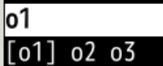
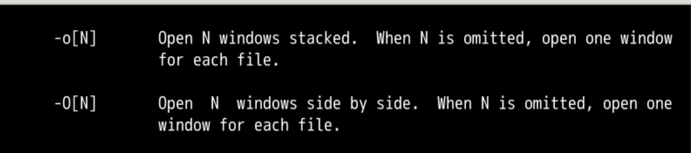
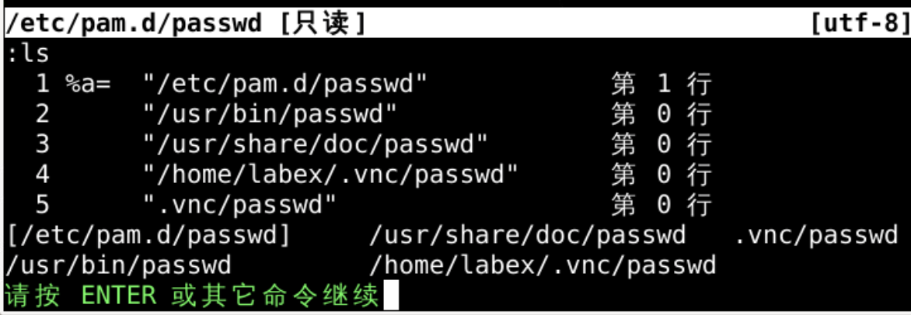

windowbuffer的buffer是在内存里面加载的硬盘文件:sp[lit] 水平切分:vsp[lit] 垂直切分:hid[e]可以隐藏当前窗口window中buffer不保存autowrite设置了:on[ly]可以全屏当前窗口:hide状态laststatus 可以设置状态栏terminal 可以开启终端window,还挺方便:sp[lit] 上下分割:vsp[lit] 左右分割:q[uit]on[ly]全屏:qall:wall:wqall:qall!man vi查到打开三个文件的方式vi o1 o2 o3vio1 o2 o3是参数列表( arguments list)3个参数 argument:ar[gs] 查看所有参数
arga argument add:arga o4 o4 到参数列表:args 可以看见 o4 进入了参数列表:arga ~/.vimrc 添加一个实际存在的文件:args 可以看见 .vimrc 进入了参数列表ls 可以看到他也进入了 buffer listb .vimrc 可以把当前 window 切换到 .vimrc 这个 buffer :argd argument deleteargd o4:args o4 从参数列表消失argd /home/shiyanlou/.vimrc.vimrc:args.vimrc从参数列表消失buffer 还在 arguements是在打开vim时候打开的参数 arguement 文件列表buffers:buffers:e o5o5会进入buffers listarguments list:arga o5arguments list删除的话:argd o5buffers list删除的话bd3或者bd o2argument 列表和缓存 buffer 列表 关系buffers 文件列表的批处理arguments 文件列表的批处理1的时候可以直接打开多个窗口-ovi -o o1 o2 o33个window,每个argument对应一个vi -O o1 o2 o3 3个文件
vim中打开多个文件terminal做准备ls -lah > oeasy.txtcp oeasy.txt o2z.txtvi:arga *.txt :args:buffers:arga */*.txttxt文件e *.txt不能执行e 不支持通配符e o3z.txt可以把文件加载到buffer listargument listargments list参数列表terminal中运行
- sudo find / -mindepth 3 -maxdepth 4 -name passwd
- 可以用sudo权限找到所有3层目录到4层目录中
- 名字含有passwd的文件列表vi作为argments list参数列表sudo find / -mindepth 3 -maxdepth 4 -name passwd | xargs viargments list 参数列表buffers list 缓冲列表 :bd4删除缓冲buffer:argd filename来删除参数argument:e filename 添加缓冲buffer :arga filename添加 参数argument
arguments listvim 打开的 参数列表buffer:arga filename添加 参数:argd filename来删除参数:args 查询参数列表:bd filename来删除缓存:e filename来打开缓存ls可以列出缓存列表terminal中配合find来找到文件vimsudo find / -mindepth 3 -maxdepth 4 -name passwd | xargs vi